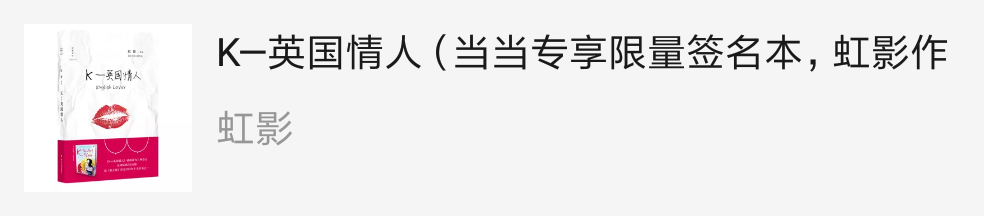
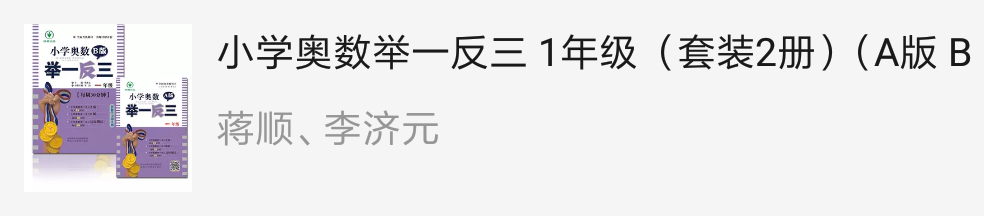

精彩书评
查看更多>
在北京发布的《2017海归就业力调查报告》显示，海归不再扎堆一线城市；互联网、金融、房地产、教育培训、机械制造五大行业对海归的需求量最大。由启德教育与前程无忧、应届生求职网联合发布的这一调查报告显示，上海、北京、广州、深圳四大一线城市仍然是海归就业首选

在北京发布的《2017海归就业力调查报告》显示，海归不再扎堆一线城市；互联网、金融、房地产、教育培训、机械制造五大行业对海归的需求量最大。由启德教育与前程无忧、应届生求职网联合发布的这一调查报告显示，上海、北京、广州、深圳四大一线城市仍然是海归就业首选
在北京发布的《2017海归就业力调查报告》显示，海归不再扎堆一线城市；互联网、金融、房地产、教育培训、机械制造五大行业对海归的需求量最大。由启德教育与前程无忧、应届生求职网联合发布的这一调查报告显示，上海、北京、广州、深圳四大一线城市仍然是海归就业首选

优洛
10.0
2017-10-13 14:50:58
回复 踩 赞